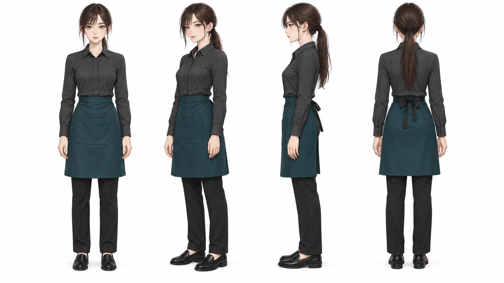
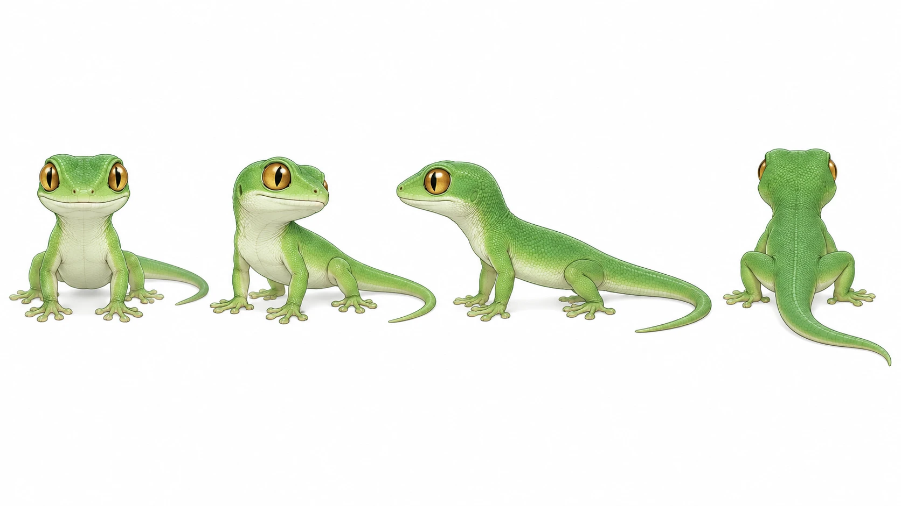
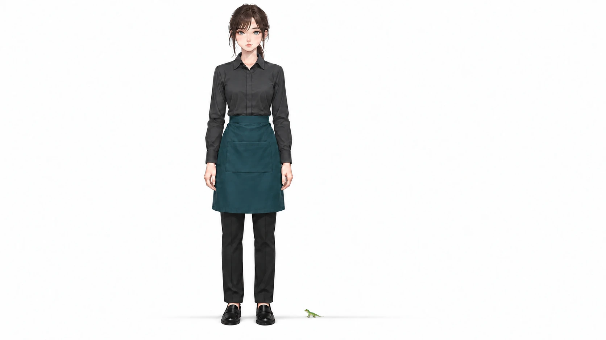
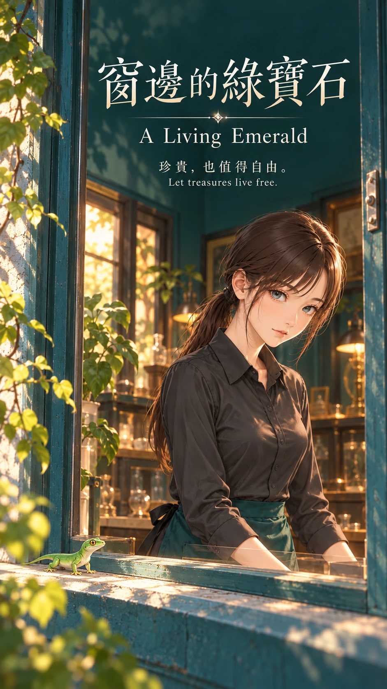

更新日期：2026-11-03
狀態：方案已確認；雙語文字、15 張圖像、字幕與本地圖像總覽已完成並核對。實際影片與音訊尚未生成。
風格：S04｜冷綠珠寶質感肖像。英文描述：Cool-Teal Jewel-Texture Anime。
全片 60 秒：片頭 5 秒＋正片 10 鏡各 5 秒＋片尾 5 秒。
圖像總覽｜分鏡圖像提示詞｜12 段影片提示詞｜資產清單｜核對報告
正式分鏡補充：從以為遺落寶石，到發現會呼吸的小生命。少女只提罩、清路，讓壁虎自行走向植物，不以手抓握或搬運。最後的寶石意象來自壁虎眼睛與水珠的自然亮點，不將動物變成珠寶。
| 項目 | 中文 | English |
|---|---|---|
| 大標題 | 窗邊的綠寶石 | A Living Emerald |
| 副標題 | 珍貴，也值得自由。 | Let treasures live free. |
中英文逐句核對語法與語義，採自然詩意對應。中文字幕每鏡 6 字，英文每鏡 2–3 個單字；字幕在後製加入，不寫入分鏡原圖。
第08鏡改由窗側反看少女左側臉，視線在畫面左下；耳釘固定本人左耳。
耳釘以角色本人左耳為準；第 01 鏡與海報可見的是右耳，所以保持無耳飾。第 08 鏡改由本人左側拍攝，才清楚見到左耳銀釘。
2026-11-03 比例修正：shot_01、shot_02 的壁虎已依 shot_03 與相同展示罩的比例放大；圖像與雙語提示詞同步，保留原鏡頭、罩體與其餘場景。
| 段落 | 全片時間 | 長度 |
|---|---|---|
| 片頭 | 00:00–00:05 | 5 秒 |
| 十鏡正片 | 00:05–00:55 | 50 秒 |
| 片尾 | 00:55–01:00 | 5 秒 |
| 鏡號／類型 | 小標題／English | 全片時間 | 中文字幕 | English Caption | 時長 |
|---|---|---|---|---|---|
| 01 中遠景 / Medium-wide shot | 收店時分 / Before Closing | 5–10 秒 | 暮光落在銀上 | Silver holds dusk. | 5 秒 |
| 02 物件特寫 / Object close-up | 桌角微光 / A Green Glint | 10–15 秒 | 以為遺落星光 | A fallen star? | 5 秒 |
| 03 微距近景 / Macro close-up | 玻璃小客 / The Little Visitor | 15–20 秒 | 原來微光會動 | The light moves. | 5 秒 |
| 04 手部特寫 / Hand close-up | 銀鑷輕放 / Setting the Tweezers Down | 20–25 秒 | 先把尋找放下 | Let searching rest. | 5 秒 |
| 05 中近景 / Medium close-up | 提起邊界 / Lifting the Boundary | 25–30 秒 | 讓透明牆退開 | Lift the walls. | 5 秒 |
| 06 俯視近景 / Top-down close-up | 讓出小路 / Making Room | 30–35 秒 | 留一條自在路 | Make room. | 5 秒 |
| 07 低機位近景 / Low-angle close-up | 自由小步 / Small Steps to Freedom | 35–40 秒 | 小腳步也向光 | Small steps, onward. | 5 秒 |
| 08 人物近景 / Portrait close-up | 眼底溫柔 / A Softer Gaze | 40–45 秒 | 心比寶石更柔 | Kindness outshines jewels. | 5 秒 |
| 09 微距側景 / Macro side shot | 葉間停步 / Among the Leaves | 45–50 秒 | 葉上自有晴光 | Sunlight finds you. | 5 秒 |
| 10 微距特寫 / Macro close-up | 活著的光 / A Living Jewel | 50–55 秒 | 原來珍貴是你 | You are precious. | 5 秒 |
類型：中遠景 / Medium-wide shot；全片 5–10 秒，5 秒。
中文
少女在工作檯左側收拾，右手低持銀鑷，左手輕靠檯面。右前方倒扣玻璃罩內可見略柔焦的綠色壁虎，體型與第三鏡一致；右側植栽與開窗建立空間關係。
English
Rika tidies at the left side of the worktop, holding silver tweezers low in her right hand while her left rests lightly on the counter. A softly focused green gecko is visible beneath the front-right cloche, at the same physical scale as in shot 03. The plant and window establish the route.
字幕：暮光落在銀上 / Silver holds dusk.
聲音建議：安靜室內底音、細小金屬聲。
中文
9:16直式單張分鏡，無文字、字幕、標誌或浮水印。S04｜冷綠珠寶質感肖像。深青綠背景對照暖膚，細密髮絲與柔和皮膚體積，銀色材質局部銳利高光，克制細輪廓、乾淨景深與近距離凝視；精緻二維動漫塗繪，不作攝影寫實、三維渲染或極簡平塗。同一間珠寶工作室：深青綠牆、啞光米白工作檯，檯面約90公分高；右側開窗與窗台和工作檯連成同一平面、無斷層。右端一只深青綠陶盆與寬葉植物，最低葉柄自然接近檯面，形成可攀爬路徑。收店前柔和午後光由右側進入，沒有夜轉晨、鏡面地板或重複倒影。唯一展示罩是透明無色鐘形玻璃罩，直徑約16公分、高約14公分，頂端一枚圓玻璃鈕，開口罩緣直接平放檯面，無獨立底座。01–04倒扣困住壁虎，05由右手提鈕垂直抬起，06後已移到後左方遠離路徑。唯一小銀色托盤起初只有一枚素銀戒；01銀鑷在少女右手，02–03銀鑷在畫外，04才放入盤內，06左手移走含銀戒與銀鑷的托盤。玻璃只有少量邊緣高光，不複製壁虎或人物。套用角色設定與共同比例；只加入本鏡指定角色。無多餘肢體、六指、斷尾、反射分身、動態弧線、殘影、玻璃穿插或懸空接觸點。璃，19歲少女珠寶學徒，約158公分、纖細自然七頭身，暖米白膚色、青灰杏眼，深栗棕直髮束成單一低馬尾至肩胛間、碎側瀏海、黑色髮圈。本人左耳單枚小銀色六角耳釘，右耳無飾；無項鍊、手環、戒指。炭灰長袖工作襯衫、深青綠及膝腰圍裙，前方一個寬口袋、背後短黑繫帶，黑直褲、黑平底樂福鞋，雙手無手套。少女在工作檯左側收拾，右手低持銀鑷，左手輕靠檯面。右前方倒扣玻璃罩內可見略柔焦的綠色壁虎，體型與第三鏡一致；右側植栽與開窗建立空間關係。 壁虎外觀採用角色設定：翠綠背、淺薄荷腹、琥珀金眼與垂直瞳孔、四足圓趾墊及單一漸細尾巴。以shot_03相同玻璃罩為尺度參照，彎曲鼻尾輪廓約占罩內緣寬七成；放大壁虎本身，不改玻璃罩或攝影機大小，四足與尾巴完整留在罩內檯面上。
English
Use case: illustration-story. ONE portrait9:16 storyboard, ideally864x1536, NO lettering, captions, logos or watermark. S04 refined cool-teal jewel-texture anime illustration: deep teal against warm skin, precise fine hair strands, softly painted skin volume, crisp local silver highlights, restrained delicate contours, clean depth separation and intimate gaze. Refined2D painted anime, not photography,3D or flat vector. One jewelry studio: deep teal wall, matte warm-ivory worktop about90cm high. OPEN RIGHT window sill joins worktop at SAME level without a gap. One deep-teal ceramic pot at far right with a broad-leaf plant, lowest stem/leaf naturally reaching table as a climbable route. Soft late-afternoon light enters from RIGHT before closing time. No dawn/night shift, mirrored floor or duplicated reflections. ONE colorless transparent bell-shaped glass cloche,16cm diameter,14cm tall, ONE round glass top knob, open rim directly on worktop, no separate base. Covers gecko in01–04; RIGHT hand lifts knob vertically in05; by06 cloche is set back-left away from route. ONE small silver tray initially holds ONLY one plain ring. Tweezers are in girl's RIGHT hand in01, off-frame in02–03, placed in tray only in04; tray with ring/tweezers moved LEFT in06. Glass has sparse edge highlights, never duplicate gecko or human reflections. Reference sheets define identity and physical scale, NOT composition. Only explicitly visible actors. No extra limbs/digits, broken tail, reflected clones, motion arcs/trails, glass intersections or unsupported feet. Rika,19-year-old female jewelry apprentice,158cm, slender natural seven-head anime build, warm ivory skin, teal-gray almond eyes. Dark chestnut straight hair in ONE low ponytail reaching between shoulder blades, loose side fringe, black tie. ONE small silver hexagonal stud on HER LEFT ear, right ear bare; no necklace, bracelet or rings. Charcoal long-sleeved work blouse, dark-teal knee-length WAIST apron with ONE broad front pocket and short black back ties, straight black trousers, flat black loafers, bare hands. Oblique medium-wide view of the same studio. Rika stands left of the worktop with tweezers low in her right hand and her empty left hand resting lightly on the counter. Inside the unchanged front-right cloche, one softly focused green gecko faces right. Its curved nose-to-tail silhouette spans about 70% of the inner rim width, matching shot 03, with all four feet and one tail fully inside on the countertop. Preserve the face, clothing, tray, ring, plant, window, lighting and framing. Preserve the character reference: jade-green back, pale mint underside, amber eyes with vertical pupils, four feet with rounded toe pads and one tapering tail. Match shot 03 using the same cloche as the scale reference: the curved nose-to-tail silhouette spans about 70% of its inner rim width. Enlarge only the gecko, never the glass or camera framing. Keep its feet and complete tail supported inside the dome.
中文
以shot_01.png作起始幀，9:16。5秒，緩推約3%；少女輕垂視線，銀鑷只隨右腕微移。壁虎安靜停在罩內，四足與單尾接觸檯面；維持第三鏡的相對體型，柔焦不可使牠縮小或消失。 固定角色、耳釘、馬尾、壁虎單尾與尺度；右側午後光不變，玻璃不產生分身。無文字、動態線或新增角色。
English
Use shot_01.png as starting frame,9:16. 5 seconds, with a slow 3% push-in. Rika lowers her gaze; the tweezers move slightly with her right wrist. The gecko rests inside the cloche, with four feet and one tail supported on the counter. Keep its size relative to the dome consistent with shot 03; soft focus must not shrink or erase it. Lock identity, left stud, low ponytail, gecko scale and single tail. Keep RIGHT afternoon light; glass never creates duplicates. No text, motion marks or new actors.
類型：物件特寫 / Object close-up；全片 10–15 秒，5 秒。
中文
近拍倒扣玻璃罩與罩內完整壁虎，體型與第三鏡一致，玻璃高光與前景銀盤形成材質對比；琥珀眼睛映出自然亮點，無手部。
English
A close-up shows the gecko inside the cloche at the same physical scale as in shot 03. Glass highlights contrast with the silver tray edge in the foreground, while its amber eye catches natural light. No hands appear.
字幕：以為遺落星光 / A fallen star?
聲音建議：金屬聲停下，音樂留白。
中文
9:16直式單張分鏡，無文字、字幕、標誌或浮水印。S04｜冷綠珠寶質感肖像。深青綠背景對照暖膚，細密髮絲與柔和皮膚體積，銀色材質局部銳利高光，克制細輪廓、乾淨景深與近距離凝視；精緻二維動漫塗繪，不作攝影寫實、三維渲染或極簡平塗。同一間珠寶工作室：深青綠牆、啞光米白工作檯，檯面約90公分高；右側開窗與窗台和工作檯連成同一平面、無斷層。右端一只深青綠陶盆與寬葉植物，最低葉柄自然接近檯面，形成可攀爬路徑。收店前柔和午後光由右側進入，沒有夜轉晨、鏡面地板或重複倒影。唯一展示罩是透明無色鐘形玻璃罩，直徑約16公分、高約14公分，頂端一枚圓玻璃鈕，開口罩緣直接平放檯面，無獨立底座。01–04倒扣困住壁虎，05由右手提鈕垂直抬起，06後已移到後左方遠離路徑。唯一小銀色托盤起初只有一枚素銀戒；01銀鑷在少女右手，02–03銀鑷在畫外，04才放入盤內，06左手移走含銀戒與銀鑷的托盤。玻璃只有少量邊緣高光，不複製壁虎或人物。套用角色設定與共同比例；只加入本鏡指定角色。無多餘肢體、六指、斷尾、反射分身、動態弧線、殘影、玻璃穿插或懸空接觸點。近拍倒扣玻璃罩與罩內完整壁虎，體型與第三鏡一致，玻璃高光與前景銀盤形成材質對比；琥珀眼睛映出自然亮點，無手部。 壁虎外觀採用角色設定：翠綠背、淺薄荷腹、琥珀金眼與垂直瞳孔、四足圓趾墊及單一漸細尾巴。以shot_03相同玻璃罩為尺度參照，彎曲鼻尾輪廓約占罩內緣寬七成；放大壁虎本身，不改玻璃罩或攝影機大小，四足與尾巴完整留在罩內檯面上。
English
Use case: illustration-story. ONE portrait9:16 storyboard, ideally864x1536, NO lettering, captions, logos or watermark. S04 refined cool-teal jewel-texture anime illustration: deep teal against warm skin, precise fine hair strands, softly painted skin volume, crisp local silver highlights, restrained delicate contours, clean depth separation and intimate gaze. Refined2D painted anime, not photography,3D or flat vector. One jewelry studio: deep teal wall, matte warm-ivory worktop about90cm high. OPEN RIGHT window sill joins worktop at SAME level without a gap. One deep-teal ceramic pot at far right with a broad-leaf plant, lowest stem/leaf naturally reaching table as a climbable route. Soft late-afternoon light enters from RIGHT before closing time. No dawn/night shift, mirrored floor or duplicated reflections. ONE colorless transparent bell-shaped glass cloche,16cm diameter,14cm tall, ONE round glass top knob, open rim directly on worktop, no separate base. Covers gecko in01–04; RIGHT hand lifts knob vertically in05; by06 cloche is set back-left away from route. ONE small silver tray initially holds ONLY one plain ring. Tweezers are in girl's RIGHT hand in01, off-frame in02–03, placed in tray only in04; tray with ring/tweezers moved LEFT in06. Glass has sparse edge highlights, never duplicate gecko or human reflections. Reference sheets define identity and physical scale, NOT composition. Only explicitly visible actors. No extra limbs/digits, broken tail, reflected clones, motion arcs/trails, glass intersections or unsupported feet. Close-up of the unchanged transparent cloche on the ivory counter. One green gecko faces right inside, with the curved nose-to-tail silhouette spanning about 70–74% of the inner rim width, matching shot 03. Four grounded feet and one complete tail stay inside the glass, with clearance from its walls. Show its amber eye and pale mint throat. Keep the original tray edge and ring at lower left, plant, window, lighting and framing. No woman, hands, reflected clone or extra animal. Preserve the character reference: jade-green back, pale mint underside, amber eyes with vertical pupils, four feet with rounded toe pads and one tapering tail. Match shot 03 using the same cloche as the scale reference: the curved nose-to-tail silhouette spans about 70% of its inner rim width. Enlarge only the gecko, never the glass or camera framing. Keep its feet and complete tail supported inside the dome.
中文
以shot_02.png作起始幀，9:16。5秒，固定特寫；焦點輕移向壁虎琥珀眼的自然亮點，牠只輕呼吸。玻璃罩、四足與尾巴位置穩定，體型保持與第三鏡一致，不縮小、漂浮或變成寶石。 固定角色、耳釘、馬尾、壁虎單尾與尺度；右側午後光不變，玻璃不產生分身。無文字、動態線或新增角色。
English
Use shot_02.png as starting frame,9:16. 5 seconds, locked close-up. Shift focus gently toward the natural glint in the gecko’s amber eye as it breathes subtly. Keep the cloche, four grounded feet and single tail stable, with the same gecko-to-dome scale as shot 03. No shrinking, floating or gemstone transformation. Lock identity, left stud, low ponytail, gecko scale and single tail. Keep RIGHT afternoon light; glass never creates duplicates. No text, motion marks or new actors.
類型：微距近景 / Macro close-up；全片 15–20 秒，5 秒。
中文
透過單一玻璃罩看見壁虎四足停在檯面，尾巴完整留在罩內。罩緣貼住檯面，玻璃只留少量高光，不產生第二隻壁虎。
English
Through the single cloche, Jade rests with four feet on the table, entire tail inside. Rim meets the surface; sparse glass highlights never create a second gecko.
字幕：原來微光會動 / The light moves.
聲音建議：細微呼吸感的旋律，無誇張爬蟲聲。
中文
9:16直式單張分鏡，無文字、字幕、標誌或浮水印。S04｜冷綠珠寶質感肖像。深青綠背景對照暖膚，細密髮絲與柔和皮膚體積，銀色材質局部銳利高光，克制細輪廓、乾淨景深與近距離凝視；精緻二維動漫塗繪，不作攝影寫實、三維渲染或極簡平塗。同一間珠寶工作室：深青綠牆、啞光米白工作檯，檯面約90公分高；右側開窗與窗台和工作檯連成同一平面、無斷層。右端一只深青綠陶盆與寬葉植物，最低葉柄自然接近檯面，形成可攀爬路徑。收店前柔和午後光由右側進入，沒有夜轉晨、鏡面地板或重複倒影。唯一展示罩是透明無色鐘形玻璃罩，直徑約16公分、高約14公分，頂端一枚圓玻璃鈕，開口罩緣直接平放檯面，無獨立底座。01–04倒扣困住壁虎，05由右手提鈕垂直抬起，06後已移到後左方遠離路徑。唯一小銀色托盤起初只有一枚素銀戒；01銀鑷在少女右手，02–03銀鑷在畫外，04才放入盤內，06左手移走含銀戒與銀鑷的托盤。玻璃只有少量邊緣高光，不複製壁虎或人物。套用角色設定與共同比例；只加入本鏡指定角色。無多餘肢體、六指、斷尾、反射分身、動態弧線、殘影、玻璃穿插或懸空接觸點。小翠，小型綠色壁虎，鼻尖至尾端約10公分，頭身約5公分、單一漸細尾巴約5公分，圓鈍三角頭、琥珀金眼與垂直瞳孔、翠綠背部、淺薄荷腹部。四肢低伏外展，每足五個小圓吸附趾墊，允許自然遮擋；無背刺、冠飾或其他斑紋，尾巴輕彎不捲成圈。透過單一玻璃罩看見壁虎四足停在檯面，尾巴完整留在罩內。罩緣貼住檯面，玻璃只留少量高光，不產生第二隻壁虎。
English
Use case: illustration-story. ONE portrait9:16 storyboard, ideally864x1536, NO lettering, captions, logos or watermark. S04 refined cool-teal jewel-texture anime illustration: deep teal against warm skin, precise fine hair strands, softly painted skin volume, crisp local silver highlights, restrained delicate contours, clean depth separation and intimate gaze. Refined2D painted anime, not photography,3D or flat vector. One jewelry studio: deep teal wall, matte warm-ivory worktop about90cm high. OPEN RIGHT window sill joins worktop at SAME level without a gap. One deep-teal ceramic pot at far right with a broad-leaf plant, lowest stem/leaf naturally reaching table as a climbable route. Soft late-afternoon light enters from RIGHT before closing time. No dawn/night shift, mirrored floor or duplicated reflections. ONE colorless transparent bell-shaped glass cloche,16cm diameter,14cm tall, ONE round glass top knob, open rim directly on worktop, no separate base. Covers gecko in01–04; RIGHT hand lifts knob vertically in05; by06 cloche is set back-left away from route. ONE small silver tray initially holds ONLY one plain ring. Tweezers are in girl's RIGHT hand in01, off-frame in02–03, placed in tray only in04; tray with ring/tweezers moved LEFT in06. Glass has sparse edge highlights, never duplicate gecko or human reflections. Reference sheets define identity and physical scale, NOT composition. Only explicitly visible actors. No extra limbs/digits, broken tail, reflected clones, motion arcs/trails, glass intersections or unsupported feet. Jade, a small green gecko,10cm total nose-to-tail,5cm head/body plus ONE5cm tapering tail. Soft rounded triangular head, amber-gold eyes with vertical pupils, jade-green back, pale mint belly. FOUR low-spread legs with five tiny rounded toe pads per foot, allowing natural occlusion. No crest, spines, extra markings or coiled chameleon tail. Macro revelation of ONE small green gecko entirely INSIDE inverted transparent glass cloche, full single tail gently curled along floor INSIDE rim, four feet on same matte table, no toe passes through glass. Natural gecko proportions from sheet,10cm within16cm dome. Amber eyes, green back, mint underside, head turned slightly right. Cloche top and round knob visible if crop allows, rim flat all around. Sparse glass edge highlights at sides only, no body-duplicating reflections, no cage bars. No hands or human face.
中文
以shot_03.png作起始幀，9:16。5秒，固定鏡頭；壁虎只微抬頭看向右側，四足不移位，尾巴與玻璃不穿插，不新增反射分身。 固定角色、耳釘、馬尾、壁虎單尾與尺度；右側午後光不變，玻璃不產生分身。無文字、動態線或新增角色。
English
Use shot_03.png as starting frame,9:16. 5 seconds, locked. Gecko slightly lifts head toward right, four feet stay planted. Tail and glass do not intersect; no reflected duplicates. Lock identity, left stud, low ponytail, gecko scale and single tail. Keep RIGHT afternoon light; glass never creates duplicates. No text, motion marks or new actors.
類型：手部特寫 / Hand close-up；全片 20–25 秒，5 秒。
中文
只見少女右手將銀鑷低放到托盤上，盤內另有一枚素銀戒。玻璃罩和壁虎留在畫外，避免工具靠近動物。
English
Only Rika's right hand lowers the tweezers onto the tray beside a plain silver ring. Cloche and gecko stay out of frame, keeping tools away from the animal.
字幕：先把尋找放下 / Let searching rest.
聲音建議：一聲輕柔的銀鑷碰盤聲。
中文
9:16直式單張分鏡，無文字、字幕、標誌或浮水印。S04｜冷綠珠寶質感肖像。深青綠背景對照暖膚，細密髮絲與柔和皮膚體積，銀色材質局部銳利高光，克制細輪廓、乾淨景深與近距離凝視；精緻二維動漫塗繪，不作攝影寫實、三維渲染或極簡平塗。同一間珠寶工作室：深青綠牆、啞光米白工作檯，檯面約90公分高；右側開窗與窗台和工作檯連成同一平面、無斷層。右端一只深青綠陶盆與寬葉植物，最低葉柄自然接近檯面，形成可攀爬路徑。收店前柔和午後光由右側進入，沒有夜轉晨、鏡面地板或重複倒影。唯一展示罩是透明無色鐘形玻璃罩，直徑約16公分、高約14公分，頂端一枚圓玻璃鈕，開口罩緣直接平放檯面，無獨立底座。01–04倒扣困住壁虎，05由右手提鈕垂直抬起，06後已移到後左方遠離路徑。唯一小銀色托盤起初只有一枚素銀戒；01銀鑷在少女右手，02–03銀鑷在畫外，04才放入盤內，06左手移走含銀戒與銀鑷的托盤。玻璃只有少量邊緣高光，不複製壁虎或人物。套用角色設定與共同比例；只加入本鏡指定角色。無多餘肢體、六指、斷尾、反射分身、動態弧線、殘影、玻璃穿插或懸空接觸點。璃，19歲少女珠寶學徒，約158公分、纖細自然七頭身，暖米白膚色、青灰杏眼，深栗棕直髮束成單一低馬尾至肩胛間、碎側瀏海、黑色髮圈。本人左耳單枚小銀色六角耳釘，右耳無飾；無項鍊、手環、戒指。炭灰長袖工作襯衫、深青綠及膝腰圍裙，前方一個寬口袋、背後短黑繫帶，黑直褲、黑平底樂福鞋，雙手無手套。只見少女右手將銀鑷低放到托盤上，盤內另有一枚素銀戒。玻璃罩和壁虎留在畫外，避免工具靠近動物。
English
Use case: illustration-story. ONE portrait9:16 storyboard, ideally864x1536, NO lettering, captions, logos or watermark. S04 refined cool-teal jewel-texture anime illustration: deep teal against warm skin, precise fine hair strands, softly painted skin volume, crisp local silver highlights, restrained delicate contours, clean depth separation and intimate gaze. Refined2D painted anime, not photography,3D or flat vector. One jewelry studio: deep teal wall, matte warm-ivory worktop about90cm high. OPEN RIGHT window sill joins worktop at SAME level without a gap. One deep-teal ceramic pot at far right with a broad-leaf plant, lowest stem/leaf naturally reaching table as a climbable route. Soft late-afternoon light enters from RIGHT before closing time. No dawn/night shift, mirrored floor or duplicated reflections. ONE colorless transparent bell-shaped glass cloche,16cm diameter,14cm tall, ONE round glass top knob, open rim directly on worktop, no separate base. Covers gecko in01–04; RIGHT hand lifts knob vertically in05; by06 cloche is set back-left away from route. ONE small silver tray initially holds ONLY one plain ring. Tweezers are in girl's RIGHT hand in01, off-frame in02–03, placed in tray only in04; tray with ring/tweezers moved LEFT in06. Glass has sparse edge highlights, never duplicate gecko or human reflections. Reference sheets define identity and physical scale, NOT composition. Only explicitly visible actors. No extra limbs/digits, broken tail, reflected clones, motion arcs/trails, glass intersections or unsupported feet. Rika,19-year-old female jewelry apprentice,158cm, slender natural seven-head anime build, warm ivory skin, teal-gray almond eyes. Dark chestnut straight hair in ONE low ponytail reaching between shoulder blades, loose side fringe, black tie. ONE small silver hexagonal stud on HER LEFT ear, right ear bare; no necklace, bracelet or rings. Charcoal long-sleeved work blouse, dark-teal knee-length WAIST apron with ONE broad front pocket and short black back ties, straight black trousers, flat black loafers, bare hands. Close-up of ONE natural RIGHT hand entering from left/bottom, charcoal cuff, gently holding silver tweezers just above ONE small silver tray on ivory worktop. One plain silver ring already in tray, no extra jewels, no other tools. Five natural hand digits with sensible occlusion, thumb and index grip tweezer body, tips face away to right, no extra hand. Entire woman face, cloche and animal OUTSIDE crop. Right window light gives local crisp silver highlights against soft warm skin and teal blur.
中文
以shot_04.png作起始幀，9:16。5秒，固定鏡頭；右手把銀鑷輕放盤內後鬆開，手往左退出少許。托盤與銀戒保持位置，不增加工具或手指。 固定角色、耳釘、馬尾、壁虎單尾與尺度；右側午後光不變，玻璃不產生分身。無文字、動態線或新增角色。
English
Use shot_04.png as starting frame,9:16. 5 seconds, locked. Right hand sets tweezers in tray, releases, retreats slightly left. Tray and ring stay fixed; no new tools or fingers. Lock identity, left stud, low ponytail, gecko scale and single tail. Keep RIGHT afternoon light; glass never creates duplicates. No text, motion marks or new actors.
類型：中近景 / Medium close-up；全片 25–30 秒，5 秒。
中文
少女右手捏住玻璃罩頂鈕，罩緣剛離檯面約兩公分；壁虎安靜停在中央，手在罩外、四足與尾巴仍在檯面。
English
Rika grips the top knob with her right hand; the rim has just cleared the table by about2cm. Jade remains centered on the worktop, with hand outside the glass and all feet and tail supported.
字幕：讓透明牆退開 / Lift the walls.
聲音建議：輕微玻璃離檯聲，旋律舒展。
中文
9:16直式單張分鏡，無文字、字幕、標誌或浮水印。S04｜冷綠珠寶質感肖像。深青綠背景對照暖膚，細密髮絲與柔和皮膚體積，銀色材質局部銳利高光，克制細輪廓、乾淨景深與近距離凝視；精緻二維動漫塗繪，不作攝影寫實、三維渲染或極簡平塗。同一間珠寶工作室：深青綠牆、啞光米白工作檯，檯面約90公分高；右側開窗與窗台和工作檯連成同一平面、無斷層。右端一只深青綠陶盆與寬葉植物，最低葉柄自然接近檯面，形成可攀爬路徑。收店前柔和午後光由右側進入，沒有夜轉晨、鏡面地板或重複倒影。唯一展示罩是透明無色鐘形玻璃罩，直徑約16公分、高約14公分，頂端一枚圓玻璃鈕，開口罩緣直接平放檯面，無獨立底座。01–04倒扣困住壁虎，05由右手提鈕垂直抬起，06後已移到後左方遠離路徑。唯一小銀色托盤起初只有一枚素銀戒；01銀鑷在少女右手，02–03銀鑷在畫外，04才放入盤內，06左手移走含銀戒與銀鑷的托盤。玻璃只有少量邊緣高光，不複製壁虎或人物。套用角色設定與共同比例；只加入本鏡指定角色。無多餘肢體、六指、斷尾、反射分身、動態弧線、殘影、玻璃穿插或懸空接觸點。璃，19歲少女珠寶學徒，約158公分、纖細自然七頭身，暖米白膚色、青灰杏眼，深栗棕直髮束成單一低馬尾至肩胛間、碎側瀏海、黑色髮圈。本人左耳單枚小銀色六角耳釘，右耳無飾；無項鍊、手環、戒指。炭灰長袖工作襯衫、深青綠及膝腰圍裙，前方一個寬口袋、背後短黑繫帶，黑直褲、黑平底樂福鞋，雙手無手套。小翠，小型綠色壁虎，鼻尖至尾端約10公分，頭身約5公分、單一漸細尾巴約5公分，圓鈍三角頭、琥珀金眼與垂直瞳孔、翠綠背部、淺薄荷腹部。四肢低伏外展，每足五個小圓吸附趾墊，允許自然遮擋；無背刺、冠飾或其他斑紋，尾巴輕彎不捲成圈。少女右手捏住玻璃罩頂鈕，罩緣剛離檯面約兩公分；壁虎安靜停在中央，手在罩外、四足與尾巴仍在檯面。
English
Use case: illustration-story. ONE portrait9:16 storyboard, ideally864x1536, NO lettering, captions, logos or watermark. S04 refined cool-teal jewel-texture anime illustration: deep teal against warm skin, precise fine hair strands, softly painted skin volume, crisp local silver highlights, restrained delicate contours, clean depth separation and intimate gaze. Refined2D painted anime, not photography,3D or flat vector. One jewelry studio: deep teal wall, matte warm-ivory worktop about90cm high. OPEN RIGHT window sill joins worktop at SAME level without a gap. One deep-teal ceramic pot at far right with a broad-leaf plant, lowest stem/leaf naturally reaching table as a climbable route. Soft late-afternoon light enters from RIGHT before closing time. No dawn/night shift, mirrored floor or duplicated reflections. ONE colorless transparent bell-shaped glass cloche,16cm diameter,14cm tall, ONE round glass top knob, open rim directly on worktop, no separate base. Covers gecko in01–04; RIGHT hand lifts knob vertically in05; by06 cloche is set back-left away from route. ONE small silver tray initially holds ONLY one plain ring. Tweezers are in girl's RIGHT hand in01, off-frame in02–03, placed in tray only in04; tray with ring/tweezers moved LEFT in06. Glass has sparse edge highlights, never duplicate gecko or human reflections. Reference sheets define identity and physical scale, NOT composition. Only explicitly visible actors. No extra limbs/digits, broken tail, reflected clones, motion arcs/trails, glass intersections or unsupported feet. Rika,19-year-old female jewelry apprentice,158cm, slender natural seven-head anime build, warm ivory skin, teal-gray almond eyes. Dark chestnut straight hair in ONE low ponytail reaching between shoulder blades, loose side fringe, black tie. ONE small silver hexagonal stud on HER LEFT ear, right ear bare; no necklace, bracelet or rings. Charcoal long-sleeved work blouse, dark-teal knee-length WAIST apron with ONE broad front pocket and short black back ties, straight black trousers, flat black loafers, bare hands. Jade, a small green gecko,10cm total nose-to-tail,5cm head/body plus ONE5cm tapering tail. Soft rounded triangular head, amber-gold eyes with vertical pupils, jade-green back, pale mint belly. FOUR low-spread legs with five tiny rounded toe pads per foot, allowing natural occlusion. No crest, spines, extra markings or coiled chameleon tail. New medium close object-and-hand view: ONE RIGHT hand enters from upper-left, natural thumb/index opposing on the ONE round glass top knob of cloche. The entire cloche has just lifted VERTICALLY2cm, continuous visible air gap between bottom rim and tabletop. ONE tiny10cm gecko stays on table centered BELOW dome, FOUR feet and single tail planted, no animal lifted with glass, tail does not cross the glass rim. Glass16cm wide, gecko much smaller than hand/forearm combined. Warm right light, teal background. Left hand, face, tweezers and ring tray outside crop. Sparse transparent edge highlights, no duplicate gecko/reflections or extra hands.
中文
以shot_05.png作起始幀，9:16。5秒，固定鏡頭；右手把玻璃罩再垂直抬高約八公分後停穩，壁虎保持原位。手不穿過玻璃，罩緣不掃過尾巴，不同時放罩或移動托盤。 固定角色、耳釘、馬尾、壁虎單尾與尺度；右側午後光不變，玻璃不產生分身。無文字、動態線或新增角色。
English
Use shot_05.png as starting frame,9:16. 5 seconds, locked. Right hand lifts cloche another8cm vertically and holds; gecko stays planted. No hand-through-glass, rim-tail intersection, placing cloche down or moving tray in this shot. Lock identity, left stud, low ponytail, gecko scale and single tail. Keep RIGHT afternoon light; glass never creates duplicates. No text, motion marks or new actors.
類型：俯視近景 / Top-down close-up；全片 30–35 秒，5 秒。
中文
略俯視檯面，玻璃罩已置於後左方。少女左手推移銀色托盤遠離右側通道，壁虎留在中央，植物葉柄與檯面相接。
English
A slight top-down view finds the cloche set back-left. Rika's left hand slides the tray away from the right-hand route. Jade remains centered; the plant stem meets the worktop.
字幕：留一條自在路 / Make room.
聲音建議：托盤輕滑過檯面的聲音。
中文
9:16直式單張分鏡，無文字、字幕、標誌或浮水印。S04｜冷綠珠寶質感肖像。深青綠背景對照暖膚，細密髮絲與柔和皮膚體積，銀色材質局部銳利高光，克制細輪廓、乾淨景深與近距離凝視；精緻二維動漫塗繪，不作攝影寫實、三維渲染或極簡平塗。同一間珠寶工作室：深青綠牆、啞光米白工作檯，檯面約90公分高；右側開窗與窗台和工作檯連成同一平面、無斷層。右端一只深青綠陶盆與寬葉植物，最低葉柄自然接近檯面，形成可攀爬路徑。收店前柔和午後光由右側進入，沒有夜轉晨、鏡面地板或重複倒影。唯一展示罩是透明無色鐘形玻璃罩，直徑約16公分、高約14公分，頂端一枚圓玻璃鈕，開口罩緣直接平放檯面，無獨立底座。01–04倒扣困住壁虎，05由右手提鈕垂直抬起，06後已移到後左方遠離路徑。唯一小銀色托盤起初只有一枚素銀戒；01銀鑷在少女右手，02–03銀鑷在畫外，04才放入盤內，06左手移走含銀戒與銀鑷的托盤。玻璃只有少量邊緣高光，不複製壁虎或人物。套用角色設定與共同比例；只加入本鏡指定角色。無多餘肢體、六指、斷尾、反射分身、動態弧線、殘影、玻璃穿插或懸空接觸點。璃，19歲少女珠寶學徒，約158公分、纖細自然七頭身，暖米白膚色、青灰杏眼，深栗棕直髮束成單一低馬尾至肩胛間、碎側瀏海、黑色髮圈。本人左耳單枚小銀色六角耳釘，右耳無飾；無項鍊、手環、戒指。炭灰長袖工作襯衫、深青綠及膝腰圍裙，前方一個寬口袋、背後短黑繫帶，黑直褲、黑平底樂福鞋，雙手無手套。小翠，小型綠色壁虎，鼻尖至尾端約10公分，頭身約5公分、單一漸細尾巴約5公分，圓鈍三角頭、琥珀金眼與垂直瞳孔、翠綠背部、淺薄荷腹部。四肢低伏外展，每足五個小圓吸附趾墊，允許自然遮擋；無背刺、冠飾或其他斑紋，尾巴輕彎不捲成圈。略俯視檯面，玻璃罩已置於後左方。少女左手推移銀色托盤遠離右側通道，壁虎留在中央，植物葉柄與檯面相接。
English
Use case: illustration-story. ONE portrait9:16 storyboard, ideally864x1536, NO lettering, captions, logos or watermark. S04 refined cool-teal jewel-texture anime illustration: deep teal against warm skin, precise fine hair strands, softly painted skin volume, crisp local silver highlights, restrained delicate contours, clean depth separation and intimate gaze. Refined2D painted anime, not photography,3D or flat vector. One jewelry studio: deep teal wall, matte warm-ivory worktop about90cm high. OPEN RIGHT window sill joins worktop at SAME level without a gap. One deep-teal ceramic pot at far right with a broad-leaf plant, lowest stem/leaf naturally reaching table as a climbable route. Soft late-afternoon light enters from RIGHT before closing time. No dawn/night shift, mirrored floor or duplicated reflections. ONE colorless transparent bell-shaped glass cloche,16cm diameter,14cm tall, ONE round glass top knob, open rim directly on worktop, no separate base. Covers gecko in01–04; RIGHT hand lifts knob vertically in05; by06 cloche is set back-left away from route. ONE small silver tray initially holds ONLY one plain ring. Tweezers are in girl's RIGHT hand in01, off-frame in02–03, placed in tray only in04; tray with ring/tweezers moved LEFT in06. Glass has sparse edge highlights, never duplicate gecko or human reflections. Reference sheets define identity and physical scale, NOT composition. Only explicitly visible actors. No extra limbs/digits, broken tail, reflected clones, motion arcs/trails, glass intersections or unsupported feet. Rika,19-year-old female jewelry apprentice,158cm, slender natural seven-head anime build, warm ivory skin, teal-gray almond eyes. Dark chestnut straight hair in ONE low ponytail reaching between shoulder blades, loose side fringe, black tie. ONE small silver hexagonal stud on HER LEFT ear, right ear bare; no necklace, bracelet or rings. Charcoal long-sleeved work blouse, dark-teal knee-length WAIST apron with ONE broad front pocket and short black back ties, straight black trousers, flat black loafers, bare hands. Jade, a small green gecko,10cm total nose-to-tail,5cm head/body plus ONE5cm tapering tail. Soft rounded triangular head, amber-gold eyes with vertical pupils, jade-green back, pale mint belly. FOUR low-spread legs with five tiny rounded toe pads per foot, allowing natural occlusion. No crest, spines, extra markings or coiled chameleon tail. Slight top-down worktop view, NO face. ONE LEFT hand from upper-left, charcoal cuff, fingertips touch outer edge of small silver tray containing ONE ring and ONE silver tweezer; slides tray toward LEFT away from clear rightward path. Right hand entirely outside crop. ONE gecko small at center-right, no hand touches it. ONE empty cloche rests stably at far back-left already off gecko, at least20cm away, optional edge only. Far RIGHT teal pot and low broad leaf/stem reaches table, same-level sill continuous without gap. Clear supported route of matte ivory table, no physical bridge or plank, no extra tools. Natural five-digit hand and four-leg gecko.
中文
以shot_06.png作起始幀，9:16。5秒，固定俯視；左手只把整個托盤平移約六公分向左，銀戒與鑷子隨盤一起移動。壁虎不動，玻璃罩不再抬起，右側路徑保持連通。 固定角色、耳釘、馬尾、壁虎單尾與尺度；右側午後光不變，玻璃不產生分身。無文字、動態線或新增角色。
English
Use shot_06.png as starting frame,9:16. 5 seconds, locked top-down. LEFT hand slides whole tray6cm LEFT; ring and tweezers move with tray. Gecko stays still, cloche remains set aside, right route stays continuous. Lock identity, left stud, low ponytail, gecko scale and single tail. Keep RIGHT afternoon light; glass never creates duplicates. No text, motion marks or new actors.
類型：低機位近景 / Low-angle close-up；全片 35–40 秒，5 秒。
中文
貼近檯面看壁虎朝右側植栽走出，前方是平整連續路徑；空玻璃罩遠在後方失焦，沒有手追逐牠。
English
At tabletop level, Jade heads right toward the plant over a flat continuous surface. The empty cloche is blurred far behind; no hand follows.
字幕：小腳步也向光 / Small steps, onward.
聲音建議：極輕環境聲，避免誇大腳步。
中文
9:16直式單張分鏡，無文字、字幕、標誌或浮水印。S04｜冷綠珠寶質感肖像。深青綠背景對照暖膚，細密髮絲與柔和皮膚體積，銀色材質局部銳利高光，克制細輪廓、乾淨景深與近距離凝視；精緻二維動漫塗繪，不作攝影寫實、三維渲染或極簡平塗。同一間珠寶工作室：深青綠牆、啞光米白工作檯，檯面約90公分高；右側開窗與窗台和工作檯連成同一平面、無斷層。右端一只深青綠陶盆與寬葉植物，最低葉柄自然接近檯面，形成可攀爬路徑。收店前柔和午後光由右側進入，沒有夜轉晨、鏡面地板或重複倒影。唯一展示罩是透明無色鐘形玻璃罩，直徑約16公分、高約14公分，頂端一枚圓玻璃鈕，開口罩緣直接平放檯面，無獨立底座。01–04倒扣困住壁虎，05由右手提鈕垂直抬起，06後已移到後左方遠離路徑。唯一小銀色托盤起初只有一枚素銀戒；01銀鑷在少女右手，02–03銀鑷在畫外，04才放入盤內，06左手移走含銀戒與銀鑷的托盤。玻璃只有少量邊緣高光，不複製壁虎或人物。套用角色設定與共同比例；只加入本鏡指定角色。無多餘肢體、六指、斷尾、反射分身、動態弧線、殘影、玻璃穿插或懸空接觸點。小翠，小型綠色壁虎，鼻尖至尾端約10公分，頭身約5公分、單一漸細尾巴約5公分，圓鈍三角頭、琥珀金眼與垂直瞳孔、翠綠背部、淺薄荷腹部。四肢低伏外展，每足五個小圓吸附趾墊，允許自然遮擋；無背刺、冠飾或其他斑紋，尾巴輕彎不捲成圈。貼近檯面看壁虎朝右側植栽走出，前方是平整連續路徑；空玻璃罩遠在後方失焦，沒有手追逐牠。
English
Use case: illustration-story. ONE portrait9:16 storyboard, ideally864x1536, NO lettering, captions, logos or watermark. S04 refined cool-teal jewel-texture anime illustration: deep teal against warm skin, precise fine hair strands, softly painted skin volume, crisp local silver highlights, restrained delicate contours, clean depth separation and intimate gaze. Refined2D painted anime, not photography,3D or flat vector. One jewelry studio: deep teal wall, matte warm-ivory worktop about90cm high. OPEN RIGHT window sill joins worktop at SAME level without a gap. One deep-teal ceramic pot at far right with a broad-leaf plant, lowest stem/leaf naturally reaching table as a climbable route. Soft late-afternoon light enters from RIGHT before closing time. No dawn/night shift, mirrored floor or duplicated reflections. ONE colorless transparent bell-shaped glass cloche,16cm diameter,14cm tall, ONE round glass top knob, open rim directly on worktop, no separate base. Covers gecko in01–04; RIGHT hand lifts knob vertically in05; by06 cloche is set back-left away from route. ONE small silver tray initially holds ONLY one plain ring. Tweezers are in girl's RIGHT hand in01, off-frame in02–03, placed in tray only in04; tray with ring/tweezers moved LEFT in06. Glass has sparse edge highlights, never duplicate gecko or human reflections. Reference sheets define identity and physical scale, NOT composition. Only explicitly visible actors. No extra limbs/digits, broken tail, reflected clones, motion arcs/trails, glass intersections or unsupported feet. Jade, a small green gecko,10cm total nose-to-tail,5cm head/body plus ONE5cm tapering tail. Soft rounded triangular head, amber-gold eyes with vertical pupils, jade-green back, pale mint belly. FOUR low-spread legs with five tiny rounded toe pads per foot, allowing natural occlusion. No crest, spines, extra markings or coiled chameleon tail. Low tabletop-level close shot of ONE small gecko heading RIGHT toward broadleaf plant, natural walking posture: one front foot slightly lifted, other feet on flat matte ivory worktop, full single gently curved tail behind. Clear continuous same-level sill ahead, no ledge cliff, floating plank or gap. Empty cloche far BACK-LEFT blurred and resting, not over animal. No human, hands or tools in this close frame. Right afternoon light catches amber eye, precise green skin volume and mint belly, not a cut gemstone, no motion marks.
中文
以shot_07.png作起始幀，9:16。5秒，低機位緩跟；壁虎完成兩個小步，腳掌依序落在檯面，尾巴自然跟隨，不跳躍、不瞬移、不生成速度線。 固定角色、耳釘、馬尾、壁虎單尾與尺度；右側午後光不變，玻璃不產生分身。無文字、動態線或新增角色。
English
Use shot_07.png as starting frame,9:16. 5 seconds, low gentle tracking. Gecko takes TWO short steps with sequential foot contacts, tail follows naturally. No leap, teleport or speed marks. Lock identity, left stud, low ponytail, gecko scale and single tail. Keep RIGHT afternoon light; glass never creates duplicates. No text, motion marks or new actors.
類型：人物近景 / Portrait close-up；全片 40–45 秒，5 秒。
中文
攝影機由窗側反看少女左側臉，她望向畫面左下方的壁虎，緊繃眉眼轉為微笑。本人左耳銀釘位於畫面右側，雙手、玻璃罩與壁虎均在畫外。
English
From the window side, the camera sees Rika's left cheek as she looks down-left toward Jade. Her expression softens; the left silver stud is viewer-right. Hands, cloche and gecko stay off-screen.
字幕：心比寶石更柔 / Kindness outshines jewels.
聲音建議：一聲輕呼氣，柔和和弦。
中文
9:16直式單張分鏡，無文字、字幕、標誌或浮水印。S04｜冷綠珠寶質感肖像。深青綠背景對照暖膚，細密髮絲與柔和皮膚體積，銀色材質局部銳利高光，克制細輪廓、乾淨景深與近距離凝視；精緻二維動漫塗繪，不作攝影寫實、三維渲染或極簡平塗。同一間珠寶工作室：深青綠牆、啞光米白工作檯，檯面約90公分高；右側開窗與窗台和工作檯連成同一平面、無斷層。右端一只深青綠陶盆與寬葉植物，最低葉柄自然接近檯面，形成可攀爬路徑。收店前柔和午後光由右側進入，沒有夜轉晨、鏡面地板或重複倒影。唯一展示罩是透明無色鐘形玻璃罩，直徑約16公分、高約14公分，頂端一枚圓玻璃鈕，開口罩緣直接平放檯面，無獨立底座。01–04倒扣困住壁虎，05由右手提鈕垂直抬起，06後已移到後左方遠離路徑。唯一小銀色托盤起初只有一枚素銀戒；01銀鑷在少女右手，02–03銀鑷在畫外，04才放入盤內，06左手移走含銀戒與銀鑷的托盤。玻璃只有少量邊緣高光，不複製壁虎或人物。套用角色設定與共同比例；只加入本鏡指定角色。無多餘肢體、六指、斷尾、反射分身、動態弧線、殘影、玻璃穿插或懸空接觸點。璃，19歲少女珠寶學徒，約158公分、纖細自然七頭身，暖米白膚色、青灰杏眼，深栗棕直髮束成單一低馬尾至肩胛間、碎側瀏海、黑色髮圈。本人左耳單枚小銀色六角耳釘，右耳無飾；無項鍊、手環、戒指。炭灰長袖工作襯衫、深青綠及膝腰圍裙，前方一個寬口袋、背後短黑繫帶，黑直褲、黑平底樂福鞋，雙手無手套。攝影機由窗側反看少女左側臉，她望向畫面左下方的壁虎，緊繃眉眼轉為微笑。本人左耳銀釘位於畫面右側，雙手、玻璃罩與壁虎均在畫外。
English
Use case: illustration-story. ONE portrait9:16 storyboard, ideally864x1536, NO lettering, captions, logos or watermark. S04 refined cool-teal jewel-texture anime illustration: deep teal against warm skin, precise fine hair strands, softly painted skin volume, crisp local silver highlights, restrained delicate contours, clean depth separation and intimate gaze. Refined2D painted anime, not photography,3D or flat vector. One jewelry studio: deep teal wall, matte warm-ivory worktop about90cm high. OPEN RIGHT window sill joins worktop at SAME level without a gap. One deep-teal ceramic pot at far right with a broad-leaf plant, lowest stem/leaf naturally reaching table as a climbable route. Soft late-afternoon light enters from RIGHT before closing time. No dawn/night shift, mirrored floor or duplicated reflections. ONE colorless transparent bell-shaped glass cloche,16cm diameter,14cm tall, ONE round glass top knob, open rim directly on worktop, no separate base. Covers gecko in01–04; RIGHT hand lifts knob vertically in05; by06 cloche is set back-left away from route. ONE small silver tray initially holds ONLY one plain ring. Tweezers are in girl's RIGHT hand in01, off-frame in02–03, placed in tray only in04; tray with ring/tweezers moved LEFT in06. Glass has sparse edge highlights, never duplicate gecko or human reflections. Reference sheets define identity and physical scale, NOT composition. Only explicitly visible actors. No extra limbs/digits, broken tail, reflected clones, motion arcs/trails, glass intersections or unsupported feet. Rika,19-year-old female jewelry apprentice,158cm, slender natural seven-head anime build, warm ivory skin, teal-gray almond eyes. Dark chestnut straight hair in ONE low ponytail reaching between shoulder blades, loose side fringe, black tie. ONE small silver hexagonal stud on HER LEFT ear, right ear bare; no necklace, bracelet or rings. Charcoal long-sleeved work blouse, dark-teal knee-length WAIST apron with ONE broad front pocket and short black back ties, straight black trousers, flat black loafers, bare hands. Intimate head-and-shoulders portrait of SAME Rika, dark chestnut LOW ponytail, teal-gray eyes, warm ivory skin, loose side fringe. Camera on HER LEFT side, showing her LEFT ear on VIEWER RIGHT; face in three-quarter angle looking DOWN-LEFT toward off-screen gecko, gentle relieved small closed-mouth smile. Show her anatomical LEFT silver hexagonal ear stud only, right ear bare, no necklace or decorative jewelry added. Charcoal work blouse, dark teal blurred studio backdrop, soft right-side late-afternoon window light, finely rendered hair and softly shaded skin. BOTH hands, cloche, plant and gecko outside crop, no reflection-face or extra character.
中文
以shot_08.png作起始幀，9:16。5秒，極慢推近；少女只微笑並眨眼一次，視線維持畫面左下方，髮尾輕動後停穩，耳釘不變形或複製。 固定角色、耳釘、馬尾、壁虎單尾與尺度；右側午後光不變，玻璃不產生分身。無文字、動態線或新增角色。
English
Use shot_08.png as starting frame,9:16. 5 seconds, very slow push-in. One small smile and blink, gaze stays down-left; ponytail tips move slightly then settle. Stud keeps shape and is not duplicated. Lock identity, left stud, low ponytail, gecko scale and single tail. Keep RIGHT afternoon light; glass never creates duplicates. No text, motion marks or new actors.
類型：微距側景 / Macro side shot；全片 45–50 秒，5 秒。
中文
壁虎沿低葉柄攀上寬葉，前足已在葉面，後足在葉面基部或葉柄處獲得支撐。前景只有植物與動物，空展示罩可在後左遠景失焦，不再覆蓋壁虎。
English
Jade climbs along a low stem onto a broad leaf, forefeet on the leaf and rear feet supported near its base. Plant and animal fill the foreground; the empty cloche may remain blurred far back-left.
字幕：葉上自有晴光 / Sunlight finds you.
聲音建議：葉片輕響，旋律明亮。
中文
9:16直式單張分鏡，無文字、字幕、標誌或浮水印。S04｜冷綠珠寶質感肖像。深青綠背景對照暖膚，細密髮絲與柔和皮膚體積，銀色材質局部銳利高光，克制細輪廓、乾淨景深與近距離凝視；精緻二維動漫塗繪，不作攝影寫實、三維渲染或極簡平塗。同一間珠寶工作室：深青綠牆、啞光米白工作檯，檯面約90公分高；右側開窗與窗台和工作檯連成同一平面、無斷層。右端一只深青綠陶盆與寬葉植物，最低葉柄自然接近檯面，形成可攀爬路徑。收店前柔和午後光由右側進入，沒有夜轉晨、鏡面地板或重複倒影。唯一展示罩是透明無色鐘形玻璃罩，直徑約16公分、高約14公分，頂端一枚圓玻璃鈕，開口罩緣直接平放檯面，無獨立底座。01–04倒扣困住壁虎，05由右手提鈕垂直抬起，06後已移到後左方遠離路徑。唯一小銀色托盤起初只有一枚素銀戒；01銀鑷在少女右手，02–03銀鑷在畫外，04才放入盤內，06左手移走含銀戒與銀鑷的托盤。玻璃只有少量邊緣高光，不複製壁虎或人物。套用角色設定與共同比例；只加入本鏡指定角色。無多餘肢體、六指、斷尾、反射分身、動態弧線、殘影、玻璃穿插或懸空接觸點。小翠，小型綠色壁虎，鼻尖至尾端約10公分，頭身約5公分、單一漸細尾巴約5公分，圓鈍三角頭、琥珀金眼與垂直瞳孔、翠綠背部、淺薄荷腹部。四肢低伏外展，每足五個小圓吸附趾墊，允許自然遮擋；無背刺、冠飾或其他斑紋，尾巴輕彎不捲成圈。壁虎沿著貼近檯面的低葉柄踏上寬葉，前足已在葉面，後足仍有支撐。只見植物與動物，不出現手或玻璃。 空展示罩只可在後左方遠景失焦，不在前景或罩住動物。
English
Use case: illustration-story. ONE portrait9:16 storyboard, ideally864x1536, NO lettering, captions, logos or watermark. S04 refined cool-teal jewel-texture anime illustration: deep teal against warm skin, precise fine hair strands, softly painted skin volume, crisp local silver highlights, restrained delicate contours, clean depth separation and intimate gaze. Refined2D painted anime, not photography,3D or flat vector. One jewelry studio: deep teal wall, matte warm-ivory worktop about90cm high. OPEN RIGHT window sill joins worktop at SAME level without a gap. One deep-teal ceramic pot at far right with a broad-leaf plant, lowest stem/leaf naturally reaching table as a climbable route. Soft late-afternoon light enters from RIGHT before closing time. No dawn/night shift, mirrored floor or duplicated reflections. ONE colorless transparent bell-shaped glass cloche,16cm diameter,14cm tall, ONE round glass top knob, open rim directly on worktop, no separate base. Covers gecko in01–04; RIGHT hand lifts knob vertically in05; by06 cloche is set back-left away from route. ONE small silver tray initially holds ONLY one plain ring. Tweezers are in girl's RIGHT hand in01, off-frame in02–03, placed in tray only in04; tray with ring/tweezers moved LEFT in06. Glass has sparse edge highlights, never duplicate gecko or human reflections. Reference sheets define identity and physical scale, NOT composition. Only explicitly visible actors. No extra limbs/digits, broken tail, reflected clones, motion arcs/trails, glass intersections or unsupported feet. Jade, a small green gecko,10cm total nose-to-tail,5cm head/body plus ONE5cm tapering tail. Soft rounded triangular head, amber-gold eyes with vertical pupils, jade-green back, pale mint belly. FOUR low-spread legs with five tiny rounded toe pads per foot, allowing natural occlusion. No crest, spines, extra markings or coiled chameleon tail. Macro side view of ONE green gecko naturally climbing a LOW sturdy plant stem onto a broad leaf. TWO front feet on upper leaf surface, hindfeet supported at stem/leaf base near continuous sill, single full tail trails along stem, no limb floating or penetrating leaf. Plant emerges from same deep-teal pot, can crop pot if necessary. Leaf/stem physically sturdy at this tiny10cm scale, not balancing on needle tip. Soft right afternoon light, cool teal negative space, amber eye, jade back/mint belly. No hands, human, foreground cloche, tools or glitter, no motion arcs. Empty cloche may remain blurred FAR BACK LEFT, never over the animal.
中文
以shot_09.png作起始幀，9:16。5秒，固定微距；壁虎只把一隻後足移上葉面後停穩，葉片因重量微彎一次。尾巴不捲成圈，葉柄不斷裂或突然生長。 固定角色、耳釘、馬尾、壁虎單尾與尺度；右側午後光不變，玻璃不產生分身。無文字、動態線或新增角色。
English
Use shot_09.png as starting frame,9:16. 5 seconds, locked macro. Gecko moves ONE rear foot onto leaf and settles; leaf flexes once under light weight. Tail never coils, stem does not break or grow. Lock identity, left stud, low ponytail, gecko scale and single tail. Keep RIGHT afternoon light; glass never creates duplicates. No text, motion marks or new actors.
類型：微距特寫 / Macro close-up；全片 50–55 秒，5 秒。
中文
壁虎已安穩停在寬葉上，琥珀眼與葉緣一滴水珠映出自然亮點；沒有少女、展示罩或珠寶，讓生命成為最後的焦點。
English
Jade rests securely on the broad leaf. An amber eye and one water droplet at the leaf edge catch natural highlights. No girl, cloche or jewelry appears; life becomes the final focus.
字幕：原來珍貴是你 / You are precious.
聲音建議：溫柔收束，保留窗邊微風。
中文
9:16直式單張分鏡，無文字、字幕、標誌或浮水印。S04｜冷綠珠寶質感肖像。深青綠背景對照暖膚，細密髮絲與柔和皮膚體積，銀色材質局部銳利高光，克制細輪廓、乾淨景深與近距離凝視；精緻二維動漫塗繪，不作攝影寫實、三維渲染或極簡平塗。同一間珠寶工作室：深青綠牆、啞光米白工作檯，檯面約90公分高；右側開窗與窗台和工作檯連成同一平面、無斷層。右端一只深青綠陶盆與寬葉植物，最低葉柄自然接近檯面，形成可攀爬路徑。收店前柔和午後光由右側進入，沒有夜轉晨、鏡面地板或重複倒影。唯一展示罩是透明無色鐘形玻璃罩，直徑約16公分、高約14公分，頂端一枚圓玻璃鈕，開口罩緣直接平放檯面，無獨立底座。01–04倒扣困住壁虎，05由右手提鈕垂直抬起，06後已移到後左方遠離路徑。唯一小銀色托盤起初只有一枚素銀戒；01銀鑷在少女右手，02–03銀鑷在畫外，04才放入盤內，06左手移走含銀戒與銀鑷的托盤。玻璃只有少量邊緣高光，不複製壁虎或人物。套用角色設定與共同比例；只加入本鏡指定角色。無多餘肢體、六指、斷尾、反射分身、動態弧線、殘影、玻璃穿插或懸空接觸點。小翠，小型綠色壁虎，鼻尖至尾端約10公分，頭身約5公分、單一漸細尾巴約5公分，圓鈍三角頭、琥珀金眼與垂直瞳孔、翠綠背部、淺薄荷腹部。四肢低伏外展，每足五個小圓吸附趾墊，允許自然遮擋；無背刺、冠飾或其他斑紋，尾巴輕彎不捲成圈。壁虎已安穩停在寬葉上，琥珀眼與葉緣一滴水珠映出自然亮點；沒有少女、展示罩或珠寶，讓生命成為最後的焦點。
English
Use case: illustration-story. ONE portrait9:16 storyboard, ideally864x1536, NO lettering, captions, logos or watermark. S04 refined cool-teal jewel-texture anime illustration: deep teal against warm skin, precise fine hair strands, softly painted skin volume, crisp local silver highlights, restrained delicate contours, clean depth separation and intimate gaze. Refined2D painted anime, not photography,3D or flat vector. One jewelry studio: deep teal wall, matte warm-ivory worktop about90cm high. OPEN RIGHT window sill joins worktop at SAME level without a gap. One deep-teal ceramic pot at far right with a broad-leaf plant, lowest stem/leaf naturally reaching table as a climbable route. Soft late-afternoon light enters from RIGHT before closing time. No dawn/night shift, mirrored floor or duplicated reflections. ONE colorless transparent bell-shaped glass cloche,16cm diameter,14cm tall, ONE round glass top knob, open rim directly on worktop, no separate base. Covers gecko in01–04; RIGHT hand lifts knob vertically in05; by06 cloche is set back-left away from route. ONE small silver tray initially holds ONLY one plain ring. Tweezers are in girl's RIGHT hand in01, off-frame in02–03, placed in tray only in04; tray with ring/tweezers moved LEFT in06. Glass has sparse edge highlights, never duplicate gecko or human reflections. Reference sheets define identity and physical scale, NOT composition. Only explicitly visible actors. No extra limbs/digits, broken tail, reflected clones, motion arcs/trails, glass intersections or unsupported feet. Jade, a small green gecko,10cm total nose-to-tail,5cm head/body plus ONE5cm tapering tail. Soft rounded triangular head, amber-gold eyes with vertical pupils, jade-green back, pale mint belly. FOUR low-spread legs with five tiny rounded toe pads per foot, allowing natural occlusion. No crest, spines, extra markings or coiled chameleon tail. Final intimate macro portrait of ONE small jade-green gecko fully settled on ONE broad leaf, natural FOUR feet with adhesive pads supported, entire single tail gently along leaf, head raised slightly toward right light, amber-gold eyes and mint underside correct. ONE tiny realistic WATER DROPLET on LEAF EDGE away from gecko, catches natural window light, not giant orb on animal. Deep teal soft background, warm gentle late-afternoon glow, refined precise green scales and eye highlights. NO woman, face reflection, hand, glass cloche, ring, actual gemstone, lettering or sparkle graphics. Peaceful living subject, distinct from previous side climbing pose.
中文
以shot_10.png作起始幀，9:16。5秒，固定近景；壁虎胸腹微微呼吸，頭部只小幅轉向光，葉緣水滴保持原位。四足停穩，無舔舌、跳躍、眨眼變形或閃爍特效。 固定角色、耳釘、馬尾、壁虎單尾與尺度；右側午後光不變，玻璃不產生分身。無文字、動態線或新增角色。
English
Use shot_10.png as starting frame,9:16. 5 seconds, locked close-up. Subtle breathing and one small head turn toward light; droplet stays in place. All feet remain settled, no tongue flick, leap, eye-morphing or sparkle effect. Lock identity, left stud, low ponytail, gecko scale and single tail. Keep RIGHT afternoon light; glass never creates duplicates. No text, motion marks or new actors.
中文
璃，19歲少女珠寶學徒，約158公分、纖細自然七頭身，暖米白膚色、青灰杏眼，深栗棕直髮束成單一低馬尾至肩胛間、碎側瀏海、黑色髮圈。本人左耳單枚小銀色六角耳釘，右耳無飾；無項鍊、手環、戒指。炭灰長袖工作襯衫、深青綠及膝腰圍裙，前方一個寬口袋、背後短黑繫帶，黑直褲、黑平底樂福鞋，雙手無手套。
English
Rika,19-year-old female jewelry apprentice,158cm, slender natural seven-head anime build, warm ivory skin, teal-gray almond eyes. Dark chestnut straight hair in ONE low ponytail reaching between shoulder blades, loose side fringe, black tie. ONE small silver hexagonal stud on HER LEFT ear, right ear bare; no necklace, bracelet or rings. Charcoal long-sleeved work blouse, dark-teal knee-length WAIST apron with ONE broad front pocket and short black back ties, straight black trousers, flat black loafers, bare hands.
中文
小翠，小型綠色壁虎，鼻尖至尾端約10公分，頭身約5公分、單一漸細尾巴約5公分，圓鈍三角頭、琥珀金眼與垂直瞳孔、翠綠背部、淺薄荷腹部。四肢低伏外展，每足五個小圓吸附趾墊，允許自然遮擋；無背刺、冠飾或其他斑紋，尾巴輕彎不捲成圈。
English
Jade, a small green gecko,10cm total nose-to-tail,5cm head/body plus ONE5cm tapering tail. Soft rounded triangular head, amber-gold eyes with vertical pupils, jade-green back, pale mint belly. FOUR low-spread legs with five tiny rounded toe pads per foot, allowing natural occlusion. No crest, spines, extra markings or coiled chameleon tail.
璃 / Rika：由專注於金屬與光澤，轉為照顧活著的小生命；用放下工具、讓出路徑與微笑表達。小翠 / Jade：保持自然四足行走和單尾，透過停步、抬頭與攀葉建立性格，不擬人表演。

中文
16:9白背景、均勻光線，璃正面、45度側面、側面、背面四個同尺度全身視角。璃，19歲少女珠寶學徒，約158公分、纖細自然七頭身，暖米白膚色、青灰杏眼，深栗棕直髮束成單一低馬尾至肩胛間、碎側瀏海、黑色髮圈。本人左耳單枚小銀色六角耳釘，右耳無飾；無項鍊、手環、戒指。炭灰長袖工作襯衫、深青綠及膝腰圍裙，前方一個寬口袋、背後短黑繫帶，黑直褲、黑平底樂福鞋，雙手無手套。S04｜冷綠珠寶質感肖像。深青綠背景對照暖膚，細密髮絲與柔和皮膚體積，銀色材質局部銳利高光，克制細輪廓、乾淨景深與近距離凝視；精緻二維動漫塗繪，不作攝影寫實、三維渲染或極簡平塗。手臂自然垂放，頭腳完整，不持道具，無文字。
English
Use case: illustration-story. ONE original female JEWELRY APPRENTICE character turnaround sheet,16:9 landscape, pure white background, even neutral lighting. Exactly four full-body views side by side on same baseline and identical scale: front,45-degree three-quarter, strict side, back. Entire hair and shoes visible, relaxed empty hands, no text or labels.19-year-old East Asian young woman,158cm, slender natural seven-head anime proportions, warm ivory skin, teal-gray almond eyes. Dark chestnut-brown straight hair tied into ONE low ponytail reaching between shoulder blades, loose side-swept fringe, plain black hair tie. Her ANATOMICAL LEFT ear has ONE small silver hexagonal stud, right ear bare; no necklace or other jewelry. Plain charcoal long-sleeved fitted work blouse with neat cuffs and hidden button placket, dark teal WAIST apron reaching knees with ONE broad front pocket, tied at back with short black straps, straight black trousers, flat black loafers. No gloves, no pattern, no tools or glass dome. S04 style: cool deep teal accents against warm delicate skin, precise fine hair strands, softly painted skin volume, restrained drawn contours, crisp local metallic highlight on silver stud, refined intimate anime illustration; original design, NOT photoreal or3D or cel-flat. Uniform light so outfit remains readable. Preserve low ponytail, silver LEFT stud, single apron pocket and costume seams across all four views. Natural arms and five-digit hands.

中文
16:9白背景、均勻光線，小翠正面、45度側面、側面、背面四個同尺度全身視角。小翠，小型綠色壁虎，鼻尖至尾端約10公分，頭身約5公分、單一漸細尾巴約5公分，圓鈍三角頭、琥珀金眼與垂直瞳孔、翠綠背部、淺薄荷腹部。四肢低伏外展，每足五個小圓吸附趾墊，允許自然遮擋；無背刺、冠飾或其他斑紋，尾巴輕彎不捲成圈。尾巴與四足完整，背面不重複正面，無文字。S04｜冷綠珠寶質感肖像。深青綠背景對照暖膚，細密髮絲與柔和皮膚體積，銀色材質局部銳利高光，克制細輪廓、乾淨景深與近距離凝視；精緻二維動漫塗繪，不作攝影寫實、三維渲染或極簡平塗。
English
Use case: illustration-story. ONE character turnaround sheet of the SAME original small green gecko,16:9 landscape, pure white background, even neutral light. Exactly FOUR full-body views in one row, equal scale on same baseline: front,45-degree three-quarter, strict side, REAR view from tail end. Keep entire tail visible, especially rear view must not duplicate front face; no labels or words. Natural tiny gecko, TOTAL length10cm: head/body5cm plus ONE tapering tail5cm, short rounded triangular head, amber-gold eyes with vertical dark pupils, smooth jade-green back, pale mint underside, FOUR low-spread legs, each with five small rounded adhesive toe pads (some naturally occluded), one pair of eyes, no other markings. Tail curves gently to one side on ground, NEVER a curled chameleon tail, no spines, crest, frills or collar. Compact tender ordinary animal, not dragon or pet-sized monster. S04 refined anime illustration, delicate precise contours, softly shaded green volume, subtle small scale texture, crisp amber eye highlight, cool green/ivory palette, not photoreal or3D. Consistent eye color and solid-green pattern across all views. Empty white sheet, uniform light, natural all-four-foot posture, no human hands or scenery, no motion lines, no duplicated limbs or tails.

中文
16:9白背景、均勻光線。一位約158公分少女與一隻鼻尖至尾端約10公分壁虎，同尺度、同地面基準。少女全身正面，壁虎側身四足停在鞋旁，總長約為少女身高的6.3%，不得放大成寵物尺寸，無文字。
English
Use case: illustration-story. ONE shared body SIZE reference,16:9 landscape, pure white background, even illumination. Input1 exact female identity/clothing. Input2 exact gecko identity, but its large drawings are NOT scale. Draw ONE full-body front girl at left-center,158cm, head and black loafers complete, empty hands at sides, left silver stud and teal waist apron intact. Draw ONE TINY gecko in side view naturally on FOUR feet to right of her shoes, same ground plane and same physical scale. Gecko TOTAL nose-to-tail length10cm (5cm body plus5cm tail), only6.3% of woman's full height: if woman is850pixels tall, gecko TOTAL length must be about54pixels, head/body only27pixels, height only about10-15pixels, smaller than her shoe. DO NOT enlarge to a dog-sized creature. Tail single tapered gently curved, amber eyes, mint belly, no extra legs. Thin faint common ground baseline. S04 softly shaded precise anime, warm skin/cool green/silver. No insets, magnifier, rulers, labels, words, additional people or extra geckos.
少女與壁虎各有獨立的正面、45 度側面、側面、背面全身圖；另附同尺度的共同比例表。三張均為白背景、均勻光線、橫式 16:9 構圖。正式場景用同一服裝與角色，工作時袖口統一推至前臂。
全片時間：0–5 秒。

中文
故事開始前，由店外斜看深青綠窗框與暖色工作室。少女在窗內整理，右手低放、未提展示罩；小壁虎在外側窗沿下方停留。畫面不出現正片的檯面特寫或完整玻璃罩，上方留出片名空間。
English
BEFORE the story, view from OUTSIDE the shop at an OBLIQUE angle: deep-teal shopfront/open window frame, softly warm studio within. Rika in LOWER RIGHT visible waist-up INSIDE window, quietly tidying, hands lowered/outside crop, no raised glass. ONE TINY10cm green gecko at LOWER LEFT exterior sill edge, actual normal size, not on girl. Late-afternoon warm light, cool teal street wall, subtle silver window latch highlight. No indoor workbench layout, no glass cloche, no close-up gemstone, NO shop sign or lettering except specified poster title. Upper35% dark teal clean wall negative space for refined typography. Original pre-story poster, not shot01 with text.
海報圖像提示詞
中文
9:16獨立海報。S04｜冷綠珠寶質感肖像。深青綠背景對照暖膚，細密髮絲與柔和皮膚體積，銀色材質局部銳利高光，克制細輪廓、乾淨景深與近距離凝視；精緻二維動漫塗繪，不作攝影寫實、三維渲染或極簡平塗。璃，19歲少女珠寶學徒，約158公分、纖細自然七頭身，暖米白膚色、青灰杏眼，深栗棕直髮束成單一低馬尾至肩胛間、碎側瀏海、黑色髮圈。本人左耳單枚小銀色六角耳釘，右耳無飾；無項鍊、手環、戒指。炭灰長袖工作襯衫、深青綠及膝腰圍裙，前方一個寬口袋、背後短黑繫帶，黑直褲、黑平底樂福鞋，雙手無手套。小翠，小型綠色壁虎，鼻尖至尾端約10公分，頭身約5公分、單一漸細尾巴約5公分，圓鈍三角頭、琥珀金眼與垂直瞳孔、翠綠背部、淺薄荷腹部。四肢低伏外展，每足五個小圓吸附趾墊，允許自然遮擋；無背刺、冠飾或其他斑紋，尾巴輕彎不捲成圈。故事開始前，由店外斜看深青綠窗框與暖色工作室。少女在窗內整理，右手低放、未提展示罩；小壁虎在外側窗沿下方停留。畫面不出現正片的檯面特寫或完整玻璃罩，上方留出片名空間。僅含四項文字：「窗邊的綠寶石」「A Living Emerald」「珍貴，也值得自由。」「Let treasures live free.」。繁體字、英文與標點準確，兩張海報文字完全相同；無其他招牌、署名、片號、標誌或浮水印。
English
Use case: illustration-story. ONE bilingual FILM POSTER,9:16 portrait. S04 refined cool-teal jewel-texture anime illustration: deep teal against warm skin, precise fine hair strands, softly painted skin volume, crisp local silver highlights, restrained delicate contours, clean depth separation and intimate gaze. Refined2D painted anime, not photography,3D or flat vector. Rika,19-year-old female jewelry apprentice,158cm, slender natural seven-head anime build, warm ivory skin, teal-gray almond eyes. Dark chestnut straight hair in ONE low ponytail reaching between shoulder blades, loose side fringe, black tie. ONE small silver hexagonal stud on HER LEFT ear, right ear bare; no necklace, bracelet or rings. Charcoal long-sleeved work blouse, dark-teal knee-length WAIST apron with ONE broad front pocket and short black back ties, straight black trousers, flat black loafers, bare hands. Jade, a small green gecko,10cm total nose-to-tail,5cm head/body plus ONE5cm tapering tail. Soft rounded triangular head, amber-gold eyes with vertical pupils, jade-green back, pale mint belly. FOUR low-spread legs with five tiny rounded toe pads per foot, allowing natural occlusion. No crest, spines, extra markings or coiled chameleon tail. BEFORE the story, view from OUTSIDE the shop at an OBLIQUE angle: deep-teal shopfront/open window frame, softly warm studio within. Rika in LOWER RIGHT visible waist-up INSIDE window, quietly tidying, hands lowered/outside crop, no raised glass. ONE TINY10cm green gecko at LOWER LEFT exterior sill edge, actual normal size, not on girl. Late-afternoon warm light, cool teal street wall, subtle silver window latch highlight. No indoor workbench layout, no glass cloche, no close-up gemstone, NO shop sign or lettering except specified poster title. Upper35% dark teal clean wall negative space for refined typography. Original pre-story poster, not shot01 with text. Render EXACTLY FOUR text blocks: Chinese title 「窗邊的綠寶石」; English title 「A Living Emerald」; Chinese subtitle 「珍貴，也值得自由。」; English subtitle 「Let treasures live free.」. Exact Traditional Chinese and punctuation. Elegant large ivory Chinese title on upper dark teal negative space, English title below, then both smaller readable subtitles, tasteful silver accent. Keep safe margins and no text over faces. NO other words, shop signs, labels, credits, watermark or logos. Correct anatomy, only one woman and one tiny gecko, no reflections that duplicate them.
全片時間：55–60 秒。
中文
故事之後，攝影機由窗外稍高角度看向少女。她在窗內輕靠窗台，兩隻空手分開平放檯沿，微笑望向外側寬葉上的小壁虎。前景不放玻璃罩或珠寶工具，店內遠景可保留失焦陳列；主角與植物共處的完整構圖，與正片最後的壁虎單獨微距不同。
English
AFTER the rescue, NEW slightly elevated EXTERIOR window view looking inward: Rika leans gently toward open window from INSIDE, both EMPTY hands resting separately palm-down on sill, shoulder-width apart, no crossed arms or gripping gecko. She smiles toward ONE small green gecko resting on broad leaf at OUTSIDE RIGHT of sill, at least a hand-width from her hands. Full upper torso, low ponytail and anatomical LEFT silver stud visible as appropriate, same charcoal blouse/teal waist apron. Lush broad leaves and warm afternoon sky edge, dark teal wall at upper35% for readable typography. No foreground cloche, tray, tweezers or gemstone; distant defocused studio display may remain. Natural10cm animal, not enlarged next to human face. A warm hopeful shared portrait, NOT final shot10 which is gecko-only macro, NOT front-shop entrance opening composition.
海報圖像提示詞
中文
9:16獨立海報。S04｜冷綠珠寶質感肖像。深青綠背景對照暖膚，細密髮絲與柔和皮膚體積，銀色材質局部銳利高光，克制細輪廓、乾淨景深與近距離凝視；精緻二維動漫塗繪，不作攝影寫實、三維渲染或極簡平塗。璃，19歲少女珠寶學徒，約158公分、纖細自然七頭身，暖米白膚色、青灰杏眼，深栗棕直髮束成單一低馬尾至肩胛間、碎側瀏海、黑色髮圈。本人左耳單枚小銀色六角耳釘，右耳無飾；無項鍊、手環、戒指。炭灰長袖工作襯衫、深青綠及膝腰圍裙，前方一個寬口袋、背後短黑繫帶，黑直褲、黑平底樂福鞋，雙手無手套。小翠，小型綠色壁虎，鼻尖至尾端約10公分，頭身約5公分、單一漸細尾巴約5公分，圓鈍三角頭、琥珀金眼與垂直瞳孔、翠綠背部、淺薄荷腹部。四肢低伏外展，每足五個小圓吸附趾墊，允許自然遮擋；無背刺、冠飾或其他斑紋，尾巴輕彎不捲成圈。故事之後，攝影機由窗外稍高角度看向少女。她在窗內輕靠窗台，兩隻空手分開平放檯沿，微笑望向外側寬葉上的小壁虎。前景不放玻璃罩或珠寶工具，店內遠景可保留失焦陳列；主角與植物共處的完整構圖，與正片最後的壁虎單獨微距不同。僅含四項文字：「窗邊的綠寶石」「A Living Emerald」「珍貴，也值得自由。」「Let treasures live free.」。繁體字、英文與標點準確，兩張海報文字完全相同；無其他招牌、署名、片號、標誌或浮水印。
English
Use case: illustration-story. ONE bilingual FILM POSTER,9:16 portrait. S04 refined cool-teal jewel-texture anime illustration: deep teal against warm skin, precise fine hair strands, softly painted skin volume, crisp local silver highlights, restrained delicate contours, clean depth separation and intimate gaze. Refined2D painted anime, not photography,3D or flat vector. Rika,19-year-old female jewelry apprentice,158cm, slender natural seven-head anime build, warm ivory skin, teal-gray almond eyes. Dark chestnut straight hair in ONE low ponytail reaching between shoulder blades, loose side fringe, black tie. ONE small silver hexagonal stud on HER LEFT ear, right ear bare; no necklace, bracelet or rings. Charcoal long-sleeved work blouse, dark-teal knee-length WAIST apron with ONE broad front pocket and short black back ties, straight black trousers, flat black loafers, bare hands. Jade, a small green gecko,10cm total nose-to-tail,5cm head/body plus ONE5cm tapering tail. Soft rounded triangular head, amber-gold eyes with vertical pupils, jade-green back, pale mint belly. FOUR low-spread legs with five tiny rounded toe pads per foot, allowing natural occlusion. No crest, spines, extra markings or coiled chameleon tail. AFTER the rescue, NEW slightly elevated EXTERIOR window view looking inward: Rika leans gently toward open window from INSIDE, both EMPTY hands resting separately palm-down on sill, shoulder-width apart, no crossed arms or gripping gecko. She smiles toward ONE small green gecko resting on broad leaf at OUTSIDE RIGHT of sill, at least a hand-width from her hands. Full upper torso, low ponytail and anatomical LEFT silver stud visible as appropriate, same charcoal blouse/teal waist apron. Lush broad leaves and warm afternoon sky edge, dark teal wall at upper35% for readable typography. No foreground cloche, tray, tweezers or gemstone; distant defocused studio display may remain. Natural10cm animal, not enlarged next to human face. A warm hopeful shared portrait, NOT final shot10 which is gecko-only macro, NOT front-shop entrance opening composition. Render EXACTLY FOUR text blocks: Chinese title 「窗邊的綠寶石」; English title 「A Living Emerald」; Chinese subtitle 「珍貴，也值得自由。」; English subtitle 「Let treasures live free.」. Exact Traditional Chinese and punctuation. Elegant large ivory Chinese title on upper dark teal negative space, English title below, then both smaller readable subtitles, tasteful silver accent. Keep safe margins and no text over faces. NO other words, shop signs, labels, credits, watermark or logos. Correct anatomy, only one woman and one tiny gecko, no reflections that duplicate them.
兩張海報僅包含完全相同的四項文字：中文片名、英文片名、中文副標題、英文副標題。已目視核對繁體字、英文拼字與標點；無其他招牌、署名、片號或標誌。
| 海報 | 時刻與場景 | 機位／姿態 | 與正片區別 |
|---|---|---|---|
| 片頭 | 故事前／店外窗框 | 斜看少女在室內整理，壁虎在左下窗沿 | 01 在工作檯內收拾，主要道具與機位不同 |
| 片尾 | 救援後／窗外看入室內 | 較高角度、少女雙手分開扶窗，壁虎在右側葉上 | 10 是壁虎單獨停棲的微距，無人物；片尾不是該鏡加字 |
15 張圖像均使用內建 image_gen 生成，最終檔案已保存至專案。逐張對照角色設定，檢查四肢、五指或趾墊、單尾、接觸點、玻璃遮擋與道具時序。已修正比例表初稿偏大的壁虎、第 01 鏡與片尾的錯側耳釘，以及第 02 鏡過早放進托盤的銀鑷。
兩段各 5 秒，分別使用對應海報作起始幀。
中文
5秒、9:16。以片頭海報為起始幀，鏡頭極慢推近2%；少女只輕轉視線，壁虎留在窗沿不走入店內，髮尾微動。上方四項文字固定為平面圖層，字形、內容與螢幕位置不變；無新增文字、玻璃罩或角色。
English
5 seconds,9:16, opening poster as start frame. Very slow2% push-in; girl's gaze shifts slightly, gecko stays on exterior sill without entering, ponytail tips stir. Lock FOUR text blocks as flat overlay with exact spelling/shapes/screen positions. No added text, cloche or actors.
中文
5秒、9:16。以片尾海報為起始幀，固定鏡頭；少女帶笑容眨眼一次，壁虎只輕轉頭，葉片微動後停穩。兩隻手分開留在窗沿，不抓握或撫摸壁虎。四項文字固定為平面圖層，內容、字形與位置不變；無新增角色或其他文字。
English
5 seconds,9:16, ending poster as start frame. Locked shot; girl blinks once while smiling, gecko makes a tiny head turn, leaf stirs then settles. Hands stay separately on sill without holding or petting gecko. Keep FOUR text blocks fixed as flat overlay with exact spelling/shapes/positions. No new actors or lettering.
四項標題文字固定為平面圖層。若實際影片工具無法穩定保字，剪輯時沿用海報原有正確文字作固定疊字；不接受錯字或逐幀變字。影片提示詞尚未以影片模型實測。